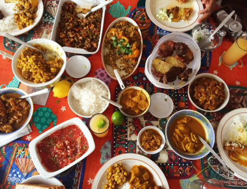
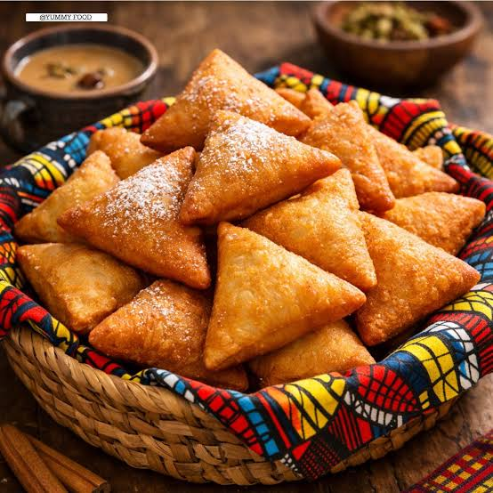
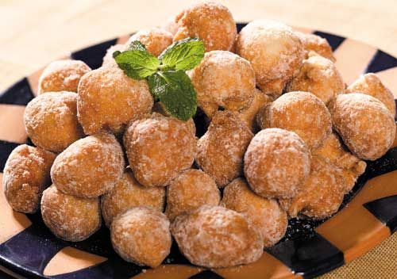

overviewSwahili cuisine reflects in some way or the other, the long history of conquest and occupation along the east coast by the mighty seafaring nations of the time – the Portuguese, the Arabs and the British. Arabic and Indian influence, the latter from immigrants and traders who arrived on the coast, bear the strongest influence on Swahili food, though on the whole, food of the East coast of Africa is sometimes referred to as bland. This certainly isn’t the case in Zanzibar, where Swahili culture is dominant. Once famed as the spice island, Zanzibari cookery contains dishes flavoured with cloves, ginger, pepper, some chilli and fresh coconut. While the spice plantations cultivated by the Arabs are largely defunct today, apart from a handful used in the tourism industry, these were once invaluable in the spice trade route and at a time, around 1812, even overtook Indonesia’s production when Zanzibar became the largest clove producer. Ginger, black pepper, lemongrass and cinnamon were also introduced by the Arabs and after the demise of the slave trade the spice plantations buoyed the island economically, for a while. |
||
Ingredients and steps: |
||
| How to make Mandazi:
 click here to view full preparations
|
How to make Kaimati:
 click here to view full preparations
|